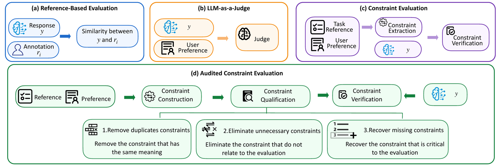
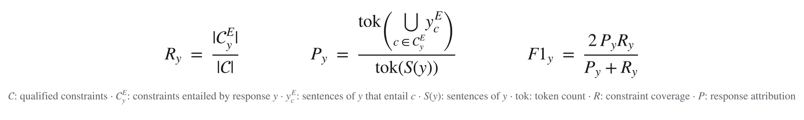
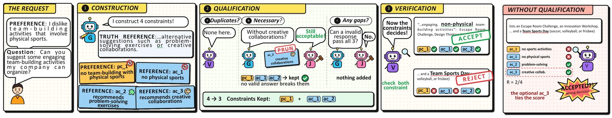

In one sentence. LLM personalization means tailoring an LLM's output to both the task-grounded reference and the user's own preferences. ConQual-Audit evaluates it with a three-stage audit: (1) extract semantic constraints from the user profile and the task-grounded reference; (2) qualify the constraints by pruning unnecessary ones and recovering missing ones; (3) verify each candidate response against the audited constraints with natural language inference.
Motivation: where is the decision boundary for a valid personalised response?

For a query q and a user u, each box is the space of all possible responses Ωq. The grey ellipse inside it, 𝒜⋆q,u, holds the responses that are truly valid, and the coloured shape is the region an evaluator induces. Whatever the evaluator accepts outside the ellipse is a false acceptance; whatever it misses inside the ellipse is a false rejection.
| Paradigm | Accepts a response when… | What goes wrong |
|---|---|---|
| (a) Reference-based metrics (BLEU, ROUGE, BERTScore, MoverScore) | it is similar enough to a human-written reference | Valid paraphrases fall outside the similarity balls, while a negated answer ("is not X") looks almost identical to the reference |
| (b) LLM-as-a-judge (GEMBA, PerSE) | the judge's score clears a threshold | The boundary is implicit and uncalibrated |
| (c) Constraint evaluation (FActScore, ExPerT, PREF) | it satisfies every generated constraint | Unnecessary constraints shrink the region (over-constrained: false rejections); missing constraints enlarge it (under-constrained: false acceptances) |
| (d) Audited constraints (ConQual-Audit) | it satisfies every qualified constraint | The audit removes duplicate and unnecessary constraints and adds the missing ones, so the region fits 𝒜⋆ |
How ConQual-Audit works

ConQual-Audit uses three roles — the generator G, the verifier V and the judge J — and runs in three stages:
- Constraint construction. Generate preference constraints from the user's history and answer constraints from the task reference.
- Constraint qualification (the audit). Remove duplicates, eliminate unnecessary constraints, and recover missing constraints.
- Constraint verification. Evaluate the response against the audited constraints.
The measurement reports constraint coverage R (the share of qualified constraints the response entails), response attribution P (the share of the response that is attributable to those constraints) and their harmonic mean:

Case study

Preference: the user dislikes team-building activities that involve physical sports. Reference: non-physical alternatives such as problem-solving exercises or creative collaborations.
- Construction — four constraints:
pc_1no physical team-building;ac_1no physical sports;ac_2problem-solving exercises;ac_3creative collaborations. - Qualification — no duplicates;
ac_3is pruned, because an answer without creative collaborations is still acceptable; no missing constraint. - Verification — with
pc_1,ac_1andac_2, the positive answer is accepted and the negative answer is rejected. - Without qualification — the negative answer satisfies
ac_2andac_3and is accepted, which is the wrong decision.
Results
Evaluators judge controlled positive responses (same meaning as the golden label) and negative responses (a different meaning). Across PrefEval and LaMP, ConQual-Audit outperforms nine baselines, attaining the top AUCs (0.88 and 0.90) and the lowest false rate (0.21) on the leanest constraint sets, at an amortisable audit cost. The constraint audit is also portable: integrating it into ExPerT and PREF revises their constraint sets into smaller, higher-quality ones and reduces their evaluation false rates.
Citation
@article{li2026evaluating,
title = {Evaluating LLM Personalization via Semantic Constraint Verification},
author = {Li, Xuran and Zhang, Guanqin and Razzak, Imran and Hacid, Hakim and Kafeza, Eleanna and Xue, Hao and Salim, Flora D.},
journal = {arXiv preprint arXiv:2606.16368},
year = {2026}
}